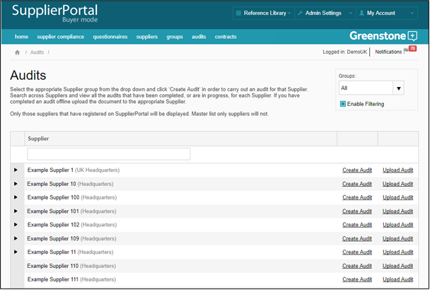
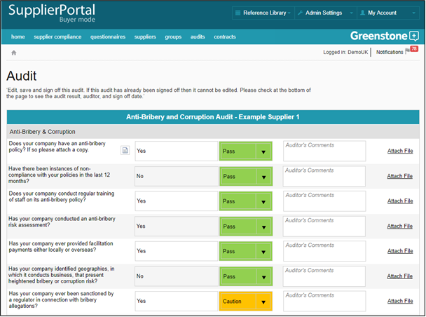
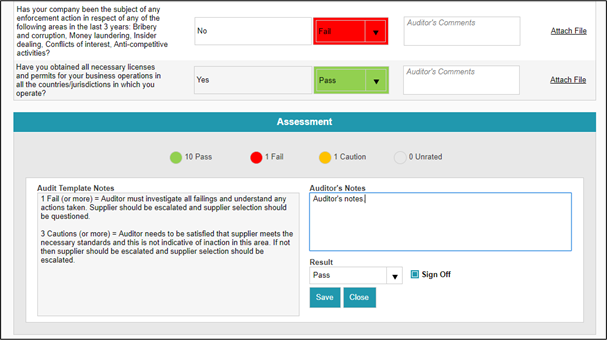

The Audits section is available to those users with Auditor rights and can be used to audit / verify the information submitted in supplier questionnaire responses. In order to use the automated audit function you need to set up your audit template(s) (see Audits > Templates).
To carry out an audit, click ‘Create Audit’ next to the Supplier you want to audit. Users will only see those suppliers that are in the groups they have access to. You can select these groups from the Groups drop down menu.

Select the appropriate audit template. Review and update the automatically assigned audit results as required for each question and upload any assisting files.

Add any auditor notes and select the Audit result before clicking Save. Once an audit is signed off it becomes locked and cannot be amended; it also becomes available in PDF format.

If you want to upload an offline audit for a Supplier, click on ‘Upload Audit’. This will enable you to keep a full record of audits within Supply-Chain Sustainability (SCS).